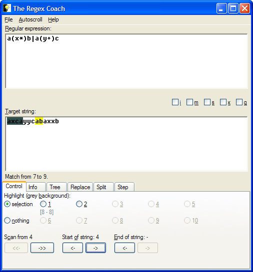

This effectively 'hides' the first four characters of the target string from the regex engine.

Note how upon your first button press the display 'snaps' back to the first match (as opposed to the third match where you've been before). It wouldn't make sense to stay where we were because the 'third match' might be somewhere else after shortening the target.
Also note how the match 'jumps' to the right after your fourth button press.